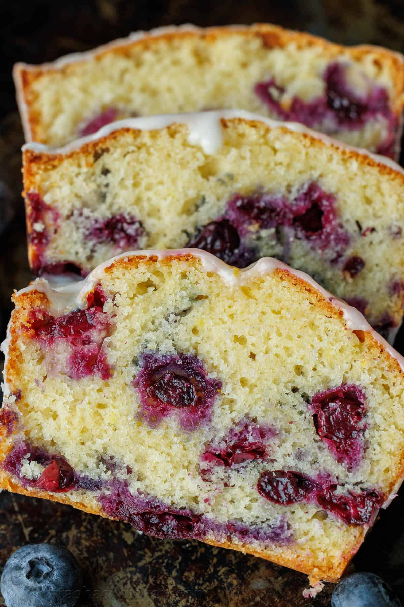

Lemon Blueberry Loaf

Ingredient List
Servings: 8 pieces
- 1 cup unsalted butter , (softened at room temperature)
- 3/4 cup granulated sugar
- 2 large eggs, room temperature
- 1 tsp vanilla extract
- 1 1/2 cups blueberries, rinsed and patted dry*
- 6 Tbsp unsalted butter, softened
- Zest of 1 large lemon, about 1 1/2 tsp, divided (reserve 1/2 tsp for the glaze)
- 1 1/2 cups all-purpose flour, plus 1/2 Tbsp to dust blueberries
- 1/4cup whole milk, room temperature
- 1 1/2 tsp baking soda
- 1/4 tsp salt
Lemon Glazes:
- 1 cup powdered sugar
- 1/2 to 2 Tbsp freshly squeezed lemon juice, or to reach desired consistency
- 1/2 tsp reserved lemon zest
Instructions
- Preheat oven to 350°F. Butter a 6 cup (8 1/2 by 4 1/2 bread loaf pan)* then dust with flour, tapping out the excess flour.
- In a medium mixing bowl, whisk together: flour, baking powder, and salt. Set aside.
- In a large mixing bowl, cream together butter and half of the granulated sugar on medium/high speed until combined then add the remaining sugar and beat for 2 minutes.
Beat in eggs, vanilla extract, and 1 tsp lemon zest and mix until well incorporated.
- Add flour mixture in 2 parts, alternating with the milk and mixing
on medium/low speed just until incorporated with each addition. Scrape the sides of the bowl with a spatula as needed./li>
- In a small bowl, toss blueberries with 1/2 Tbsp flour then fold them into the batter just until incorporated. Spread the batter into your prepared pan and bake for 50-60 min at 350°F until golden on top and a toothpick inserted into the center comes out clean.*
Let cool in pan for 10-15 minutes then run a cake release tool or knife around the edges and transfer the loaf to a wire rack to cool completely before glazing.*
- After your bread is fully cooled, in a separate bowl, stir together powdered sugar, lemon juice, and reserved 1/2 tsp lemon zest.
Stir until smooth. It should have a drizzling consistency. Add more lemon juice to thin it out or powdered sugar to make it thicker.